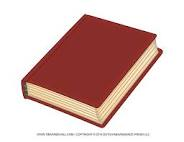
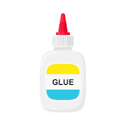
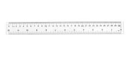

Case Study: Google Lens VS MobileNet
Google Lens VS MobileNet
-
Test Image: Book 
Output on Google Lens: book
Output on MobileNet: binder, ring-binder
Results:
-
Test Image: Pen

Output on Google Lens pen:
Output on MobileNet: pole
-
Test Image: liquid glue 
Output on Google Lens: White Glue
Output on MobileNet: hairspray
-
Test Image: crayon

Output on Google Lens: Doms Crayon
Output on MobileNet: microphone
-
Test Image: scale/ruler 
Output on Google Lens: handbook, MaxLite florescent
Output on MobileNet: ruler